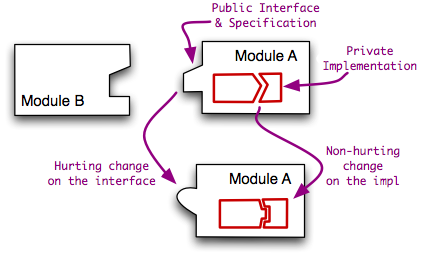

<map name="GraffleExport">
	<area shape=poly coords="144,163,144,184,58,184,58,163,144,163" href="safeState()">
	<area shape=poly coords="408,48,408,69,332,69,332,48,408,48" href="safeState()">
	<area shape=poly coords="308,4,308,25,223,25,223,4,308,4" href="safeState()">
	<area shape=poly coords="396,150,396,182,329,182,329,150,396,150" href="safeState()">
</map>

